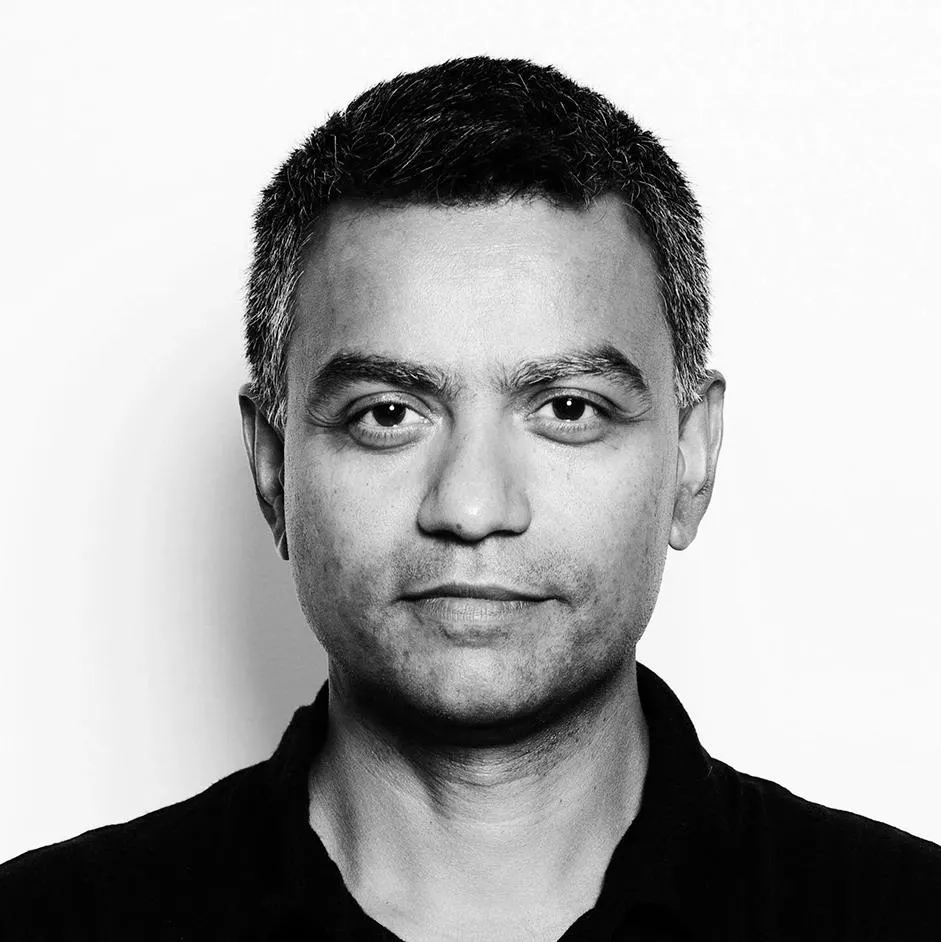

DSNP is managed by Project Liberty and advised by a group of experts with long and deep history in Internet protocol and governance development. This team of expert advisors has done foundational work across protocol development, data privacy, and in developing the technology governance models the Internet relies on today. They bring deep experience in technological innovation and community-building, and are committed to bringing DSNP to the next stage, both technically and in how it is developed and managed in the future.
Dave Clark
Senior Research Scientist at MIT's Computer Science and Artificial Intelligence Laboratory (CSAIL) and Fellow of the National Academy of Engineering and the American Academy of Arts and Sciences. Previously: chief protocol architect of the precursor body to the Internet Architecture Board, chairman of the Computer Science and Telecommunications Board of the National Academies.
Alex "Sandy" Pentland
Toshiba Professor of Media Arts and Sciences at MIT, board member of the UN Foundation's Global Partnership for Sustainable Development Data, member of advisory boards for the UN Secretary General, the UN Foundation, Consumers Union, and OECD, and formerly the American Bar Association, Google, AT&T, and Nissan. Member US National Academy of Engineering.

Deb Roy
Professor of Media Arts and Sciences at MIT, director of the MIT Center for Constructive Communication, and founder and CEO, Cortico. Previously: executive director of the MIT Media Lab, Visiting Professor at Harvard Law School. founding CEO of Bluefin Labs, and chief media scientist of Twitter from 2013 to 2017.
Wendy Seltzer
Principal Identity Architect at Tucows. Previously: Strategy Lead and Counsel, World Wide Web Consortium (W3C). Past board director of The Tor Project, World Wide Web Foundation US, and Open Source Hardware Association, and at-large advisory committee liaison to the ICANN Board.
Audrey Tang
Senior Fellow of the Project Liberty Institute. Previously: Taiwan's first digital minister (2016-2024); shaped the country’s internationally acclaimed COVID-19 response and cyber resilience. Initiator of vTaiwan, a participatory democracy platform with the decentralized civic tech movement g0v.
Sara Wedeman
Founder and owner, Behavioral Economics Consulting Group. Previously: Principal at the Wharton Center for Applied Research, led the Research Division of CoreStates Financial Corporation (now Wachovia Corporation)